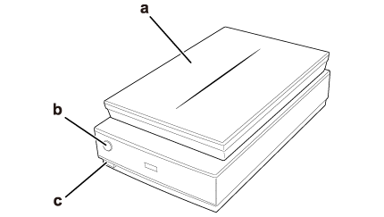

a. pokrywa skanera
b. przycisk Start
c. przycisk zasilania
 |
||
 |
||
Części skanera


a. mata do dokumentów
b. blokada transportowa przystawki do materiałów przezroczystych
b. taca dokumentów
d. mechanizm skanujący
b. blokada transportowa przystawki do materiałów przezroczystych
b. taca dokumentów
d. mechanizm skanujący

a. złącze interfejsu elementów opcjonalnych
b. złącze interfejsu USB
c. gniazdo prądu stałego
d. przewód pokrywy
e. blokada transportowa skanera
b. złącze interfejsu USB
c. gniazdo prądu stałego
d. przewód pokrywy
e. blokada transportowa skanera